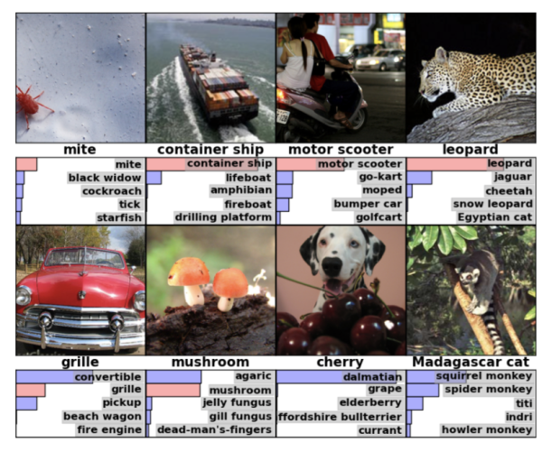

Machine Learning
Q&A... and a bit of entertainment
Created by Martin Thoma, 13.02.2018, 18:00 - 18:30
What is Machine Learning?
A computer program is said to learn from experience E with respect to some class of tasks T and performance measure P if its performance at tasks in T, as measured by P, improves with experience E.—Tom M. Mitchell
A computer program learns if it becomes better the more data it gets.
—Martin Thoma
Examples
- Computer Vison: Recognize traffic signs / pedestrians / vehicles in "webcam" images; estimate depth from 2D images, emotion recognition
- Automatic Speech Recognition (ASR): Speech to Text
- Control: Self-driving cars
- Planning: Go, Chess and other board games
- Understanding Texts (Natural language Processing - NLP): Language Identification, Translation, Summarization, ...
- Price Estimations: Houses, Cars, ...
- Robotics: Movement planning, Computer Vision,
- …
Tasks – from a ML developers perspective
| Classification | Regression | Clustering |
|---|---|---|
| Book, Cat, Dog? | Predict house prices | Finding groups in data |
| Matrix Completion | Reinforcement Learning |
|---|---|
| Netflix movie recommendation | Learn to play Go / chess |
Classification
- Is an e-mail spam or not?
- Have to texts the same author?
- 2 face images: Are those the same person?
- What (single thing) is on an image?
- Which things are on an image? Where are they?

Krizhevsky et al: ImageNet Classification with Deep Convolutional Neural Networks
Regression
- Estimate house prices
- Predict the probability of a credit card transaction being fraud
Neural Networks
A construction kit for parametrized functions
Buzzwords
- Neural Networks with many (more than 2) layers are deep.
- Optimizing the parameters of a NN is called training or learning.
- Optimizing the parameters of a deep network is called deep learning.
- See martin-thoma.com/ml-glossary for many more
Frameworks
| General | Scipy + Numpy | Scikit-learn = sklearn | ||||
|---|---|---|---|---|---|---|
| Tabular Data Analysis | Pandas | IPython/Jupyter Notebooks | ||||
| Neural Nets | Tensorflow | Theano | Caffe | Torch7 | ||
| Keras | ||||||
| tflearn | Lasagne | |||||
People at Netlight
- Michael Ludwig: Infrastructure (e.g. Hadoop/Spark, Cloud: AWS/GCP/Azure)
- Marcus Windmark: Outlier/Anomaly detection
- Saksham Gautam: NLP, Computer Vision, Emotion Recognition
- Martin Thoma: Computer Vision, Neural Networks
- Many more in #ccell_data und #ccell_machinelearning
Data Science vs AI vs Machine Learning vs Deep Learning
TODOData Engineer vs Data Scientist vs Software Engineer
TODOLet the fun begin...
Packman
Gradius
Breakout
Tetris
Twitter-Bot Tay


Trap a Self-Driving Car
Pretty Code
function linkify( selector ) {
if( supports3DTransforms ) {
var nodes = document.querySelectorAll( selector );
for( var i = 0, len = nodes.length; i < len; i++ ) {
var node = nodes[i];
if( !node.className ) {
node.className += ' roll';
}
}
}
}
Code syntax highlighting courtesy of highlight.js.
Much more
- Right-to-left support
- Extensive JavaScript API
- Auto-progression
- Parallax backgrounds
- Custom keyboard bindings